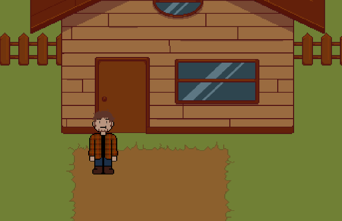
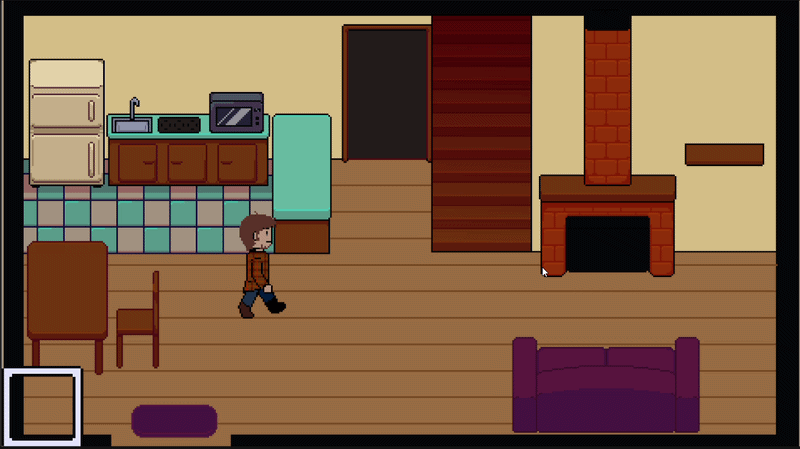
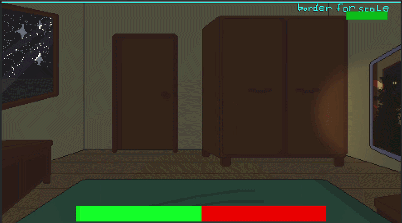
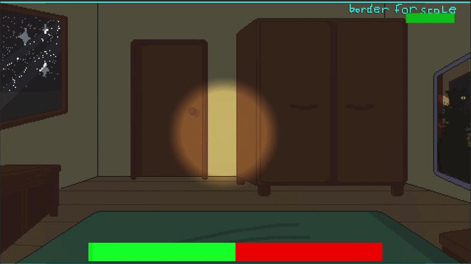

Team project · 5 people
Lucidus
A 2D puzzle-platformer about surviving your own dreams.

Gameplay highlights



Overview
Lucidus is a story-driven 2D game where you play a character living an ordinary life full of chores. When he gets tired he goes to bed and enters a dream — and the more chores he finished during the day, the more time he gets in that dream.
If he doesn't finish in time, he wakes up in the middle of the night into sleep paralysis, where demons come out to attack him. His only defence is a flashlight.
Features
- Dynamic lighting tied to the monster attack mechanic
- A 3D first-person shooter sequence inside a 2D game
- Atmospheric art style and sound design
- Multiple in-game tasks that change how long the dream lasts
Technologies used
- Unity Engine
- C# for scripting
- Universal Render Pipeline (URP) for 2D lighting effects
- Krita for the 2D art (made by a teammate)
What I learned
- Advanced C# scripting for game logic
- Implementing 2D lighting and shadow effects in Unity
- Integrating a 2D game within a 3D world
- Tying art, sound and mechanics into one coherent experience
- Working in a team of five